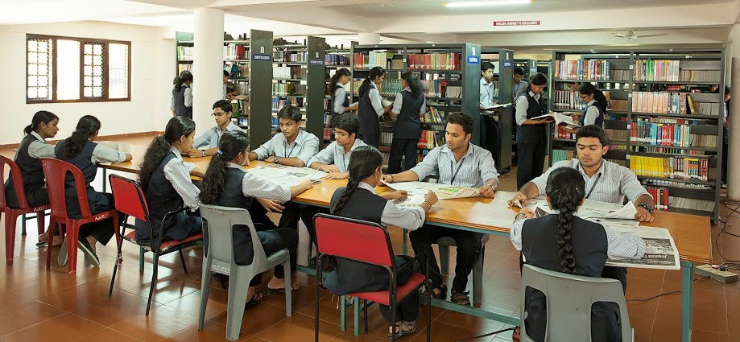
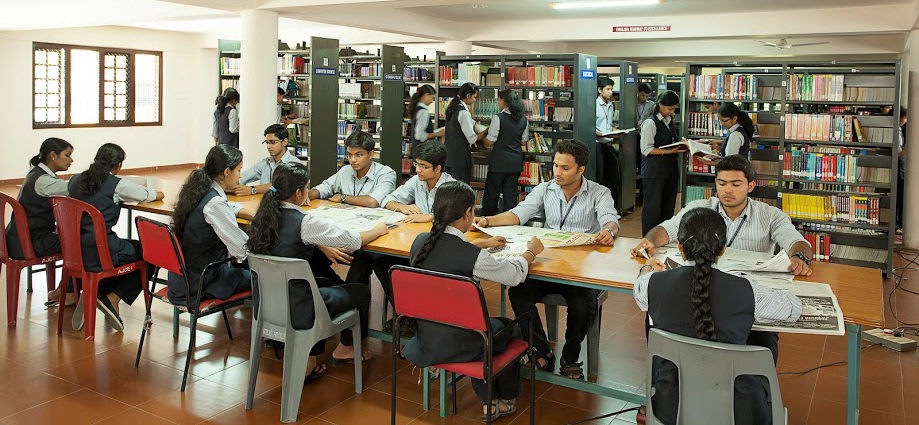

Introduction
Amal Jyothi College of Engineering (AJCE), Kanjirappally, is one of the leading self-financing engineering colleges in Kerala. Established in 2001 and managed by the Catholic Diocese of Kanjirappally, the institution is autonomous and affiliated with APJ Abdul Kalam Technological University.
In a highly competitive higher education environment, AJCE strategically applies the Marketing Mix (4Ps) — Product, Price, Place, and Promotion — to attract students, deliver quality education, and build a strong institutional brand. This website analyzes AJCE’s marketing mix from a student’s perspective.
Product-Academic Offerings
Amal Jyothi College of Engineering offers a wide range of undergraduate and postgraduate programs including B.Tech, M.Tech, BCA, MCA, and PhD programs. The curriculum is outcome-based and regularly updated to meet industry requirements.
- B.Tech programs: CSE, ECE, Mechanical, Civil, IT, AI & Data Science
- M.Tech programs in specialized engineering domains
- Experienced faculty with research and industry exposure
- Mentoring system and project-based learning
Infrastructure & Student Services
The 65-acre green campus includes modern laboratories, smart classrooms, digital library, hostels, sports facilities, innovation centers, and a Technology Business Incubator (TBI).

 

AJCE’s strong placement cell, industry tie-ups, and active student clubs act as its key Unique Selling Propositions (USPs).
Price – Fee Structure & Scholarships
AJCE follows a competitive and value-based pricing strategy. The fee structure is affordable compared to many private engineering colleges while maintaining high academic standards.
| Program | Approx. Annual Fee (₹) |
|---|---|
| B.Tech | 1,00,000 – 1,25,000 |
| M.Tech | 70,000 - 1,20,000 |
| BCA / MCA | 60,000 – 90,000 |
Scholarships, government fee concessions, and installment facilities help students from diverse economic backgrounds access quality education.
Place – Location & Learning Access
Amal Jyothi College of Engineering (AJCE) is located at Kanjirappally, Kerala, offering a calm and eco-friendly learning environment away from city congestion. The serene location supports focused academic and personal development.
- Sprawling 65-acre green campus 🌿
- Well-connected by road to major towns in Kerala
- Residential facilities for both boys and girls
AJCE delivers education through a blend of traditional classroom teaching and technology-enabled learning. Along with offline classes, the college uses an LMS-supported digital learning system for notes, assignments, assessments, and student progress tracking.
- Offline classroom-based learning
- Learning Management System (LMS) support
- High-speed Wi-Fi enabled campus
- Smart classrooms and digital labs

AJCE also utilizes digital platforms, LMS, and virtual classrooms to support blended and technology-enabled learning.
Promotion – Branding & Communication
Amal Jyothi College of Engineering (AJCE) adopts a strong mix of traditional and digital promotional strategies to communicate its academic excellence and institutional values. The college maintains a professional digital presence that supports admissions, branding, and student engagement.
The official college website serves as the primary source of information for
prospective students, parents, and recruiters.
Official Website:
www.amaljyothi.ac.in
- Active presence on social media platforms such as Instagram, Facebook, and YouTube
- Promotion through college fests, technical symposiums, and national-level events
- Participation in education fairs and outreach programs
- Workshops, seminars, hackathons, and industry interaction programs
Accreditation and recognitions play a significant role in strengthening the brand image of AJCE. The college is accredited by NAAC and several of its programs are NBA accredited, which enhances trust, credibility, and perceived quality among students and stakeholders.
In addition, AJCE enjoys a strong word-of-mouth reputation built through alumni success, consistent placement records, and positive student experiences. Recommendations from alumni, parents, and faculty significantly influence admission decisions.
Campus Tour Video

Click the image to watch the video on YouTube
Analysis – Strengths & Weaknesses
Strengths
- Autonomous status and academic flexibility
- Excellent infrastructure and faculty
- Strong placement and industry tie-ups
- Innovation and entrepreneurship focus
Weaknesses
- Limited international collaborations
- Higher fees for management quota students
Conclusion & Suggestions
- Increase global academic partnerships
- Strengthen digital and international branding
- Expand industry-certified and skill-based programs
Overall, Amal Jyothi College of Engineering effectively applies the 4Ps of Marketing by offering quality education, competitive pricing, strategic location advantages, and strong promotional activities. With enhanced global exposure and digital outreach, AJCE can further strengthen its competitive position in higher education.
College Contact Details
Amal Jyothi College of Engineering (Autonomous)
Kanjirappally, Kottayam District
Kerala – 686518, India
Phone: +91 4828 305100
Email: info@amaljyothi.ac.in
Website:
www.amaljyothi.ac.in
Affiliation: APJ Abdul Kalam Technological University (KTU)
Accreditation: NAAC Accredited | NBA Accredited Programs